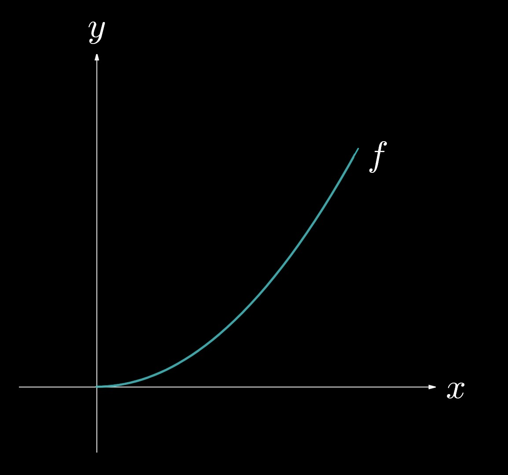
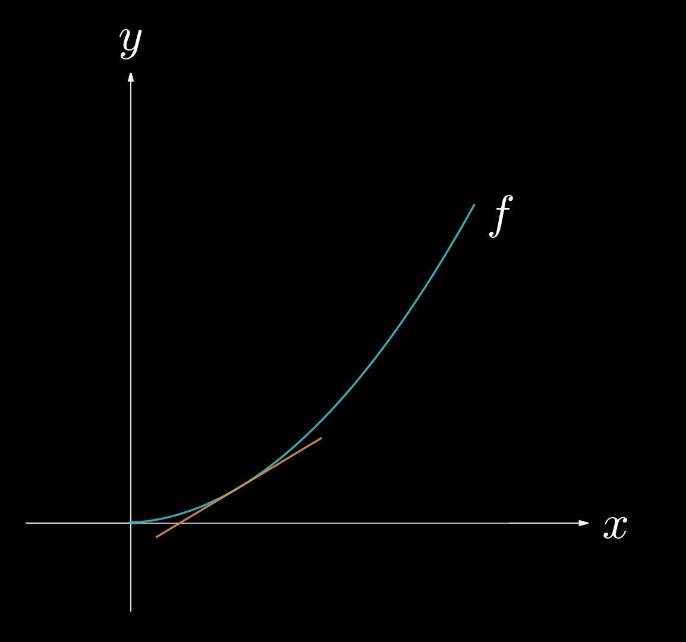
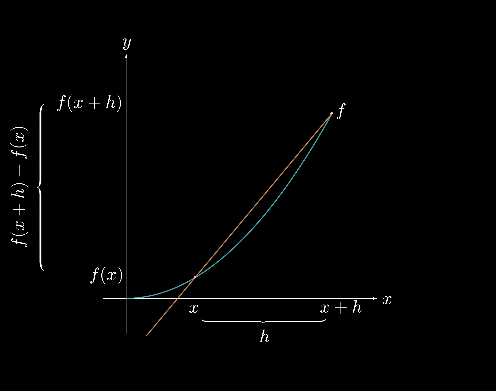
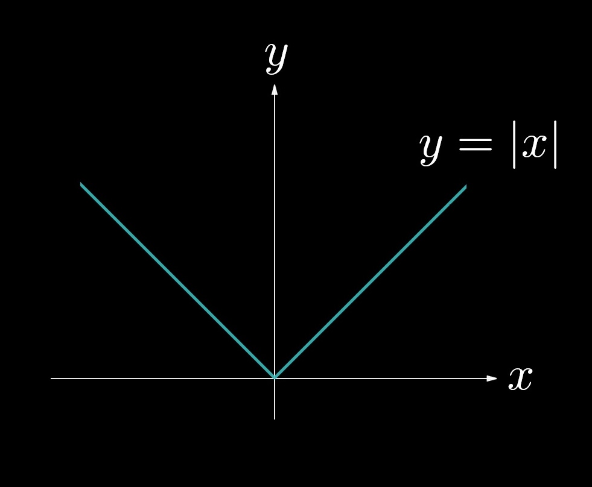
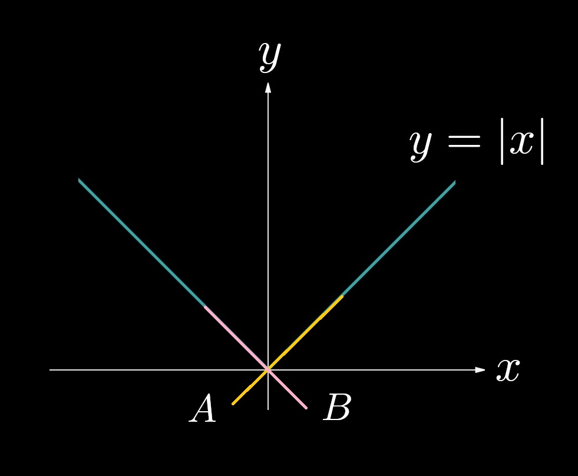
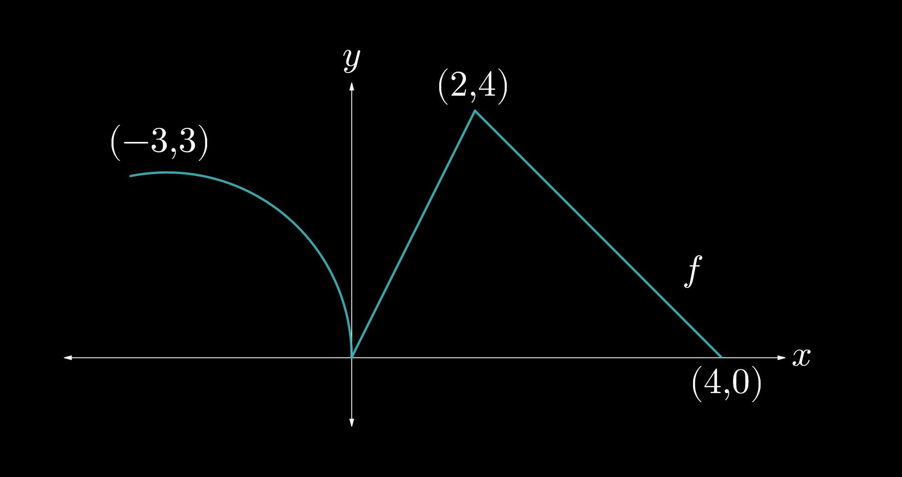

2.1 — Defining a Derivative
Let's now introduce the second fundamental tool of calculus, the derivative, which measures a function's sensitivity to change. Derivatives can be thought of as the "instantaneous rate of change" at a certain point.
As a geometric interpretation, consider the function \(f\), shown below.
Fig. 2.1-1. A function \(f\) is shown in the first quadrant.
Now let's draw a tangent line to \(f\) at any point \((x, f(x))\), as done in the figure below.
Fig. 2.1-2. A tangent line to a point on the graph of \(f\) is shown in orange. The line touches, but does not intersect, \(f\) at that point.
For the moment, a working definition of a tangent line is a line that "just touches" the curve at a certain point on it. The tangent line touches, but does not intersect, the curve at points close to it. The slope of this tangent line represents the derivative of \(f\) at that point.
There are various notations for derivatives, as shown below.
\((1)\) \(\displaystyle \frac{\textrm{d} y}{\textrm{d} x} \)
\((2)\) \(\displaystyle y' \)
\((3)\) \(\displaystyle \dot{y} \)
For an introductory calculus class, we will mainly be using the first and second notations, which are named after Leibniz and Lagrange, respectively. The third notation, named after Newton, is more commonly seen in physics contexts and is only used to denote differentiation with respect to time.
How can we calculate the slope of the tangent line? Take a minute to think about this problem, which had stumped mathematicians for millennia. The answer is, as per the theme of calculus, to approximate! Let's draw a secant line, which is a line that passes through (at a minimum) two points of the graph.
Fig. 2.1-3. A secant line of \(f\) is shown, whose slope is given by the difference quotient \(\displaystyle \frac{f(x + h) - f(x)}{h} \).
The slope of the secant line can be expressed as the difference quotient $$ \frac{\textrm{change in} \, y}{\textrm{change in} \, x} = \frac{f(x + h) - f(x)}{h}, $$ where \((x, f(x))\) is the point at which we seek the derivative and \(h\) is the horizontal distance between the two points. Notice, from Fig. 2.1-3, that if \(h\) is made smaller, then the points will be closer together, and if \(h\) is made infinitely small, then the secant line will collapse into a tangent line, as shown by the following animation.
We can therefore write the definition of a derivative as
$$ \frac{\textrm{d} y}{\textrm{d} x} = \lim_{h \to 0} \frac{f(x + h) - f(x)}{h}, $$
which is the limit of the difference quotient we introduced previously, or, for a certain point \(a\), as
$$ \frac{\textrm{d} y}{\textrm{d} x} \Big |_{x = a} = \lim_{x \to a} \frac{f(x) - f(a)}{x - a} $$
The quantity \(\textrm{d} x\)—called a differential—represents an infinitely small change in \(x\), and the term \(\displaystyle \frac{\textrm{d} y}{\textrm{d} x}\) can be thought of as a ratio of infinitely small changes in \(y\) and \(x\). This notion of treating \(\displaystyle \frac{\textrm{d} y}{\textrm{d} x}\) as a fraction of differentials raises questions of rigor, but it is an effective way to first grasp the concept of differentiation.The interpretation of a derivative is, as mentioned at the start of this section, the change in a function at a certain instant. Compare this to the average rate of change, which is the slope of the secant line over a defined interval, to a derivative—the rate of change at an exact moment. It is therefore necessary to assert that a function must be continuous for it to be differentiable. Additionally, if there is a sharp turn, peak, or horizontal tangent, then the derivative does not exist at that point.
Consider, as an example, the function \(\displaystyle y = |x|\), which has a sharp turn at \(x = 0\).
Fig. 2.1-5. The graph of the function \(y = |x|\).
Try to draw a tangent line to \(\displaystyle |x|\) at \(x = 0\).
Fig. 2.1-6. Two possible tangent lines can be drawn, represented as \(A\) and \(B\), with slopes of \(1\) and \(-1\), respectively.
There are two potential ways to draw the tangent line. Notice, from Fig. 2.1-6, that line \(A\) has a slope of \(1\), while line \(B\) has a slope of \(-1\). Because of this disagreement, it can be said that \(\displaystyle \frac{\textrm{d} |x|}{\textrm{d} x} \Big|_{x = 0}\) is undefined. The notion of the slopes of the left- and right-hand side tangent lines is analogous to the criteria we introduced for continuity—both sides must be equivalent.
The water level in a pool as a function of time is given by \(\displaystyle w(t)\), where \(w\) is measured in liters and \(t\) is measured in hours. It is known that \(w'(6) = -0.2\). What does this quantity represent?
Consider the following graph of \(f\).  Use the graph to find the values of \(f'(0), f'(1),\) and \(f'(4)\).
\(f'(0)\) is undefined because \(f\) has a sharp turn at \(x = 0\).
\(f'(1)\) is equivalent to the slope of the line segment from \(x = 0\) to \(x = 2\), which is \(\displaystyle \frac{4 - 0}{2 - 0} = 2. \)
\(f'(4)\) is undefined because \(f\) cannot be differentiable at the endpoints, as there cannot be a tangent line drawn.
Let \(g(x) = x^2\). Find and interpret \(g'(3)\).